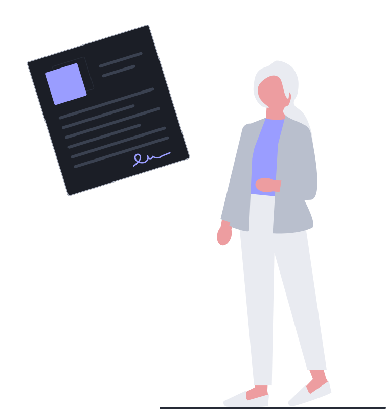
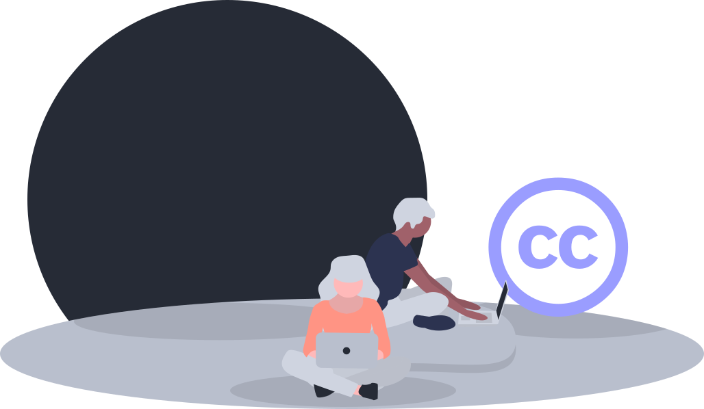
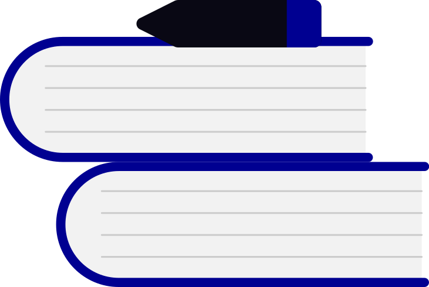
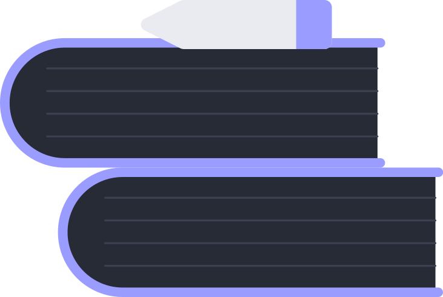
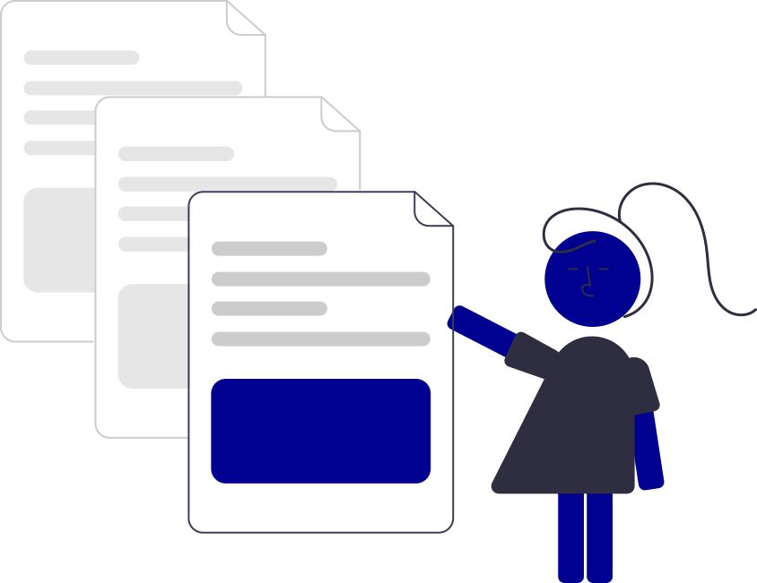
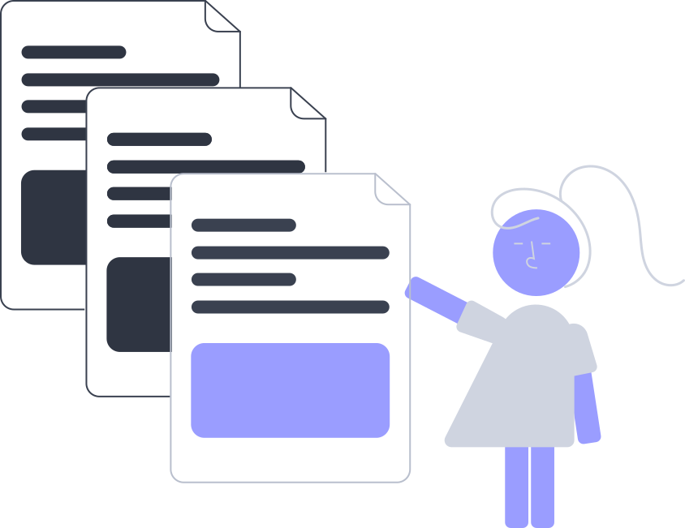

Rédiger, signer et publier les actes administratifs.
Scribae est un éditeur de trames et d'actes administratifs. Les administrateurs préparent le modèle, les services le remplissent, le logiciel compile l'acte, orchestre sa signature et sa publication — puis l'exporte dans des formats ouverts et normés.
La publicité n'est pas un détail de procédure : c'est elle qui rend l'acte opposable et fixe son entrée en vigueur. Le code des relations entre le public et l'administration (CRPA) en fait une condition de légalité et impose, depuis 2016, de publier en ligne dans des formats réutilisables. Fait à la main, ce circuit produit des fichiers Word, des PDF scannés et des recueils que ni les administrés ni les moteurs de recherche ne peuvent exploiter.

La publicité fait l'acte
La publication est une étape du logiciel : sa date est enregistrée, la date d'exécutoire et l'opposabilité sont calculées, les délais (transmission, notification, recours) sont suivis.
CRPA L. 221-2
Open data par défaut
Le recueil public expose chaque acte en JSON, Markdown, texte brut et Akoma Ntoso : lisible par les humains, les moteurs de recherche et les agents logiciels.
CRPA L. 312-1-1
Accessibilité du droit
Chaque acte publié reçoit une adresse citable et un identifiant ELI, et se consulte sans compte, dans sa version en vigueur — comme sur Légifrance.
CRPA L. 222-1
Conformité et preuve
L'original signé est conservé tel quel et reste vérifiable ; le journal d'audit enregistre chaque geste, et la version publiée reste consultable.
CRPA L. 322-6

IIPhilosophie
Un commun au service de l'intérêt général.
Scribae est un logiciel libre : son code est public, auditable et réutilisable. Une collectivité peut l'installer chez elle, l'adapter à son organisation, le transmettre — sans dépendre d'un éditeur ni confier ses actes à un service tiers.
Libre et open source
Publié sous GNU GPL v3.0 : le code se lit, s'audite, se corrige et se fork. La confiance vient de la vérifiabilité, pas d'une promesse commerciale.
Auto-hébergement
Sur votre serveur — la pile Docker livrée (nginx, Node, MariaDB) — ou branché à votre base MySQL / MariaDB. Vos actes ne quittent pas votre organisation.
Souveraineté des données
Aucun compte en ligne obligatoire, et le contenu des actes n'est jamais transmis à un tiers. Le poste suffit pour essayer ; le serveur de la collectivité pour travailler à plusieurs.
Gratuité de la diffusion du droit
Publier un acte ne doit rien coûter à ceux qui le lisent : le recueil est ouvert, sans compte, sans dépendance à un format propriétaire.
Aucune prison dorée
Référentiel, trames et actes s'exportent à tout moment, dans des standards ouverts. Vous n'êtes jamais prisonnier du logiciel que vous utilisez.
Motivation d'intérêt général
Outiller la conformité, la transparence et l'accès au droit, plutôt que vendre une boîte noire : l'objectif est le service public, pas la rente.
Porté par un juriste, codé par une IA
Scribae est conçu avec passion par un juriste, au plus près des besoins concrets des services — et il continue d'évoluer avec eux. Le code, lui, est écrit par une intelligence artificielle, sous sa conduite et sa relecture.
Les collectivités sont donc invitées à auditer le code source — tout est public — et à faire part de leurs retours : anomalies, idées, besoins. Chaque remarque compte.
IIIÉtymologie
Écrire, publier, garder.
scriba
latin · pluriel scribae · de scribere, « écrire »
Dans la Rome antique, notaire public ou greffier. Les scribae sont les assistants des magistrats — les plus haut placés de la hiérarchie des apparitores, devant les licteurs, les messagers et les hérauts. Ils tiennent les comptes et les archives publiques depuis l'ærarium, le trésor de l'État, et enregistrent les serments sur des tablettes publiques.


Ce qui les sépare des simples copistes — les librarii —, c'est ce qu'ils font vraiment : enregistrer, contrôler, authentifier. Ce savoir-faire vaut un statut, et un pouvoir. À la fin du IVe siècle avant notre ère, l'un d'eux en fait usage : Cnaeus Flavius, scriba d'Appius Claudius Caecus et fils d'un affranchi, publie le recueil des formules de procédure sans lesquelles une action n'était pas valable — formules que les pontifes tenaient secrètes — et fait dresser autour du Forum le tableau des fastes, les jours où la religion permettait de plaider.
« Il dévoila au public les formules de jurisprudence qui étaient en réserve entre les mains des pontifes, comme au fond d'un sanctuaire ; et, pour mettre les citoyens à portée de connaître par eux-mêmes les jours où la religion permettait de vaquer aux procès, il fit placer autour du Forum le tableau des fastes. »
Tite-Live, Histoire romaine, IX, 46
Le droit cesse alors de se lire au fond d'un sanctuaire : il s'affiche au milieu de la place. L'élection de Flavius comme édile curule scandalisa l'aristocratie ; le tableau des fastes, lui, resta dressé. C'est cette charge que Scribae reprend : écrire l'acte, le publier, et garder ce qui a été publié.
Qui peut signer quoi : chaînes de délégation, pouvoir, étendue, dates, visas.
Parapheur
La validation interne avant signature : vérification, visa, signature — un rôle par étape.
Circuit de signature
Le circuit est organisé ici ; la signature se fait avec l'outil de la collectivité.
Publier et diffuser
Publication & recueil
Recueil public sans compte : recherche, liste par année, identifiant ELI, opposabilité.
Exécution & délais
Contrôle de légalité, délai de recours, attestations PDF, télétransmission en option.
Modifier & abroger
Acte modificatif, version consolidée, mentions « Modifié / Abrogé par ».
Documents non juridiques
Verbatim d'assemblée, déclaration, vœu : publiés au recueil, mais ils ne font pas droit.
Formats ouverts
Akoma Ntoso 3.0, Schematron, JSON-LD / ELI, HTML A4, Word, Markdown.
API REST
La référence complète du service, et de quoi jouer la requête pour de vrai.
Administrer et accompagner
Administration
Identité, rôles et permissions, références, circuits, notifications, base de données.
Assistants
Plume dans l'atelier, Publia au recueil : ils conduisent au chapitre ou à l'acte qui répond.
Guide intégré
Un wiki de 28 chapitres — glossaire, dépannage — dans la langue des services.
Scribae écrit de l'Akoma Ntoso 3.0 (LegalDocML, OASIS) — le même standard ouvert que LEOS, l'éditeur de législation de la Commission européenne — et jamais un format propriétaire. Il continue d'évoluer : chaque écran est décrit pas à pas dans le guide intégré à l'application. Scribae n'est pas un prestataire de signature électronique : la signature s'effectue avec l'outil de la collectivité, par API ou en mode manuel.
VInstaller
En ligne en trois clics, ou chez vous.
Aucune compilation : le dépôt se sert tel quel.
OPTION 01 — GITHUB PAGES
Essayer ou démontrer, sans serveur
Idéal pour une démonstration ou un usage individuel : l'application tourne entièrement dans le navigateur.
Forkez le dépôt sur votre compte
Settings → Pages : branche main, dossier /, Save
En une minute, l'application est en ligne
Le jeu de démonstration s'active par un réglage : éteint, l'outil part d'un référentiel vierge
OPTION 02 — VOTRE SERVEUR
Travailler à plusieurs postes
Pour que trames et actes soient partagés par tout un service, deux voies :
La pile Docker livrée (nginx, Node, MariaDB), en quelques minutes
Ou la base MySQL / MariaDB que la collectivité exploite déjà
Guides d'installation et d'exploitation fournis au service informatique
Installation et exploitation pas à pas. Prérequis, .env, sauvegardes, mise à jour, dépannage : la documentation technique du service, du premier docker compose up à la restauration d'une base.Lire la documentation
Vos données. Par défaut, tout est enregistré dans le navigateur et rien ne quitte votre poste. Les assistants n'envoient que la question — jamais le contenu des actes — au moteur de langage que vous branchez ; les notifications par courriel, elles, supposent un serveur SMTP sur un déploiement auto-hébergé. L'export (référentiel, trames, actes, JSON, Akoma Ntoso, Word) est disponible à tout moment : vous n'êtes jamais prisonnier du logiciel.


Essayez Scribae sans rien installer.
L'application s'ouvre sur le recueil public — les actes publiés, consultables par tous, sans compte. « Se connecter » donne accès à l'atelier, avec onze comptes fictifs présentés par profil, qui s'ouvrent d'un clic.
Le jeu de démonstration est entièrement fictif (mairie de Valmont-sur-Loire). La démonstration signe avec un certificat de démonstration, non qualifié ; en production, vous branchez l'outil de signature de la collectivité — par API ou en déposant la version signée à la main. Le logiciel est fourni « en l'état », sans garantie (GNU GPL v3.0, articles 15 à 17).
Installer et exploiter Scribae en auto-hébergement
Ce que contient la pile, comment la configurer, la démarrer, la sauvegarder, la mettre à jour et la dépanner — une page technique, écrite pour le service informatique de la collectivité.
Elle rassemble, sans les remplacer, les deux documents techniques du logiciel : src/server/README.md (installation) et src/docs/ADMINISTRATION.md (exploitation et maintenance), avec leurs annexes docs/VARIABLES.md et docs/DOCKER.md. La version de référence reste celle du dépôt : en cas d'écart, c'est elle qui fait foi.
Scribae 1.5.3 · notes de version jusqu'à 1.5.4a · page relevée en septembre 2026 · github.com/aplds/scribae
01Ce que l'on installe
Scribae se compose de deux moitiés indépendantes. C'est le point à retenir avant tout le reste : l'application n'a aucune donnée en dur et n'écrit jamais directement en base — elle ne connaît qu'un contrat REST (/v1/…) et un réglage par poste (une adresse, un jeton).
persistance partagée, dépôt des actes, signature, publication, identifiants ELI
sur un serveur Node, devant une base MySQL / MariaDB
Tout ce qui est propre à la collectivité — entités, services et bureaux, personnes, références juridiques, numérotation, vocabulaire, polices et couleurs — vit dans un référentiel éditable et exportable. C'est ce référentiel, et les actes qui en découlent, que la base conserve.
Deux façons de faire tourner l'application
Démonstration (statique)
Auto-hébergé (le service)
Application servie par
GitHub Pages, un site statique
nginx (conteneur web)
Données partagées
non — chaque navigateur a les siennes
MariaDB de la collectivité
Signature et publication
service embarqué dans la page
service Node (src/server/mysql/)
Dépend d'un service distant
oui, pour les fonctions partagées
non
Pour quoi faire
essayer, montrer, former
produire des actes réels
La démonstration publique n'est pas un service. Tout y reste dans le navigateur du visiteur : rien n'est partagé entre collègues, rien n'est sauvegardé, et ce qui est conservé peut disparaître (navigation privée, effacement des données du site, éviction au-delà des bornes de capacité). Il n'y a pas non plus d'accès SMTP : les notifications y sont constatées « non envoyées ». Une collectivité qui produit des actes réels installe le service, ou branche la base qu'elle exploite déjà.
02La pile, conteneur par conteneur
La pile livrée dans src/server/ monte quatre conteneurs, un réseau interne et deux volumes. Seul web publie un port : tout le reste est invisible depuis l'extérieur.
navigateurl'application, chargée depuis la façade · le recueil public, ouvert à tous
https://actes.example.fr · http://serveur:8080 en essai
HTTPS · /src/… le code, /v1/… l'API
webnginx : sert l'application et le recueil, proxifie /v1/ vers api
le seul conteneur qui publie un port (HTTP_PORT)
réseau interne « interne » · aucun port publié
apile service Node : /v1/db/… les données, /v1/… la signature et la publication
ouvre aucune connexion sortante : il ne parle qu'à la base
mysql://db:3306 · aucun port publié
dbMariaDB 11 : les tables sb_collection, sb_record, sb_journal, sb_etat
volume donnees — le dossier de la base
au démarrage, quelques secondes
db-initrepose le compte applicatif de la base au mot de passe du .env, puis applique schema.sql
puis s'arrête : « exited (0) » dans docker compose ps est le comportement attendu
Depuis la 1.5.3b, aucun fichier de l'hôte n'est monté dans ces conteneurs : la façade, le schéma et les réglages d'nginx sont construits dans les images. C'est ce qui met l'installation à l'abri des refus de lecture des montages (SELinux, AppArmor, NFS, espace de noms d'utilisateurs) — la panne la plus fréquente de l'ancienne pile.
Deux volumes, donc : donnees pour MariaDB, et la racine servie par la façade, construite dans l'image de web. Le service n'a pas de dossier de travail à sauvegarder — tout ce qui compte pour la collectivité est en base (§ 12).
03Prérequis
Un serveur (Linux conseillé) avec Docker et le plugin docker compose.
Le dépôt de l'application — le dossier qui contient src/ ; c'est le contexte de construction, et non un dossier de fichiers à monter.
Un nom de domaine et un reverse-proxy TLS pour la production (§ 8).
Une base MariaDB : celle de la pile, ou celle que la collectivité exploite déjà (§ 8).
Un coffre à secrets pour le fichier .env — il ne va ni dans le dépôt, ni dans une sauvegarde de la base.
HTTPS n'est pas une option. La signature électronique utilise crypto.subtle (WebCrypto), qui n'existe que dans un contexte sécurisé : HTTPS, ou http://localhost pour un essai. Servie en http:// depuis un autre hôte, l'application ne peut pas signer — ce n'est pas une anomalie.
Rien à compiler, rien à installer sur les postes de travail : les agents utilisent un navigateur. Un poste récent, une session, et c'est tout.
04Configurer le déploiement
Toute la configuration tient dans un fichier .env, à la racine de src/server/, copié depuis le modèle livré.
cd src/server
cp env.example .env
Générer un jeton d'API
Le service n'accepte que l'empreinte SHA-256 des jetons : le jeton en clair, lui, est remis à l'application. On produit donc les deux lignes d'un même geste.
JETON=$(openssl rand -hex 32)
echo "API_TOKEN (en clair, pour l'application) : $JETON"
printf '%s' "$JETON" | sha256sum # → empreinte, pour API_TOKENS
Les variables à renseigner
Variable
Rôle
DB_ROOT_PASSWORD
mot de passe administrateur de MariaDB. Il sert à aligner le compte applicatif sur DB_PASSWORD et à appliquer le schéma à chaque démarrage (service db-init), ainsi qu'à l'amorçage du dossier de données
DB_PASSWORD
mot de passe du compte applicatif scriba. La pile le repose sur la base à chaque démarrage, sans toucher aux données
API_TOKENS
libellé:empreinte_sha256 — les jetons de déploiement acceptés en écriture. Facultatif : les clés d'API créées dans l'application les remplacent
API_TOKEN
le même jeton, en clair, remis à l'application par la façade
HTTP_PORT
port publié sur l'hôte (8080 par défaut)
AUTO_MIGRATE
true dans la pile livrée : le service applique schema.sql au démarrage, et de nouveau quand il se rétablit après une panne de base. Le fichier ne supprime rien
API_BASE
adresse de l'API vue par le navigateur. Vide = même origine — le cas du déploiement fourni
CORS_ORIGINS
origines autorisées à appeler l'API, séparées par des virgules. Vide = aucune, et c'est le bon réglage quand tout est servi par le même domaine. À renseigner seulement si l'application est servie par une autre origine ; * ne transporte aucune session
DB_HOST / DB_PORT
la base, si elle est hébergée ailleurs sur le réseau local (§ 8)
Un .env modifié ne prend qu'à la recréation.docker compose restart relance le même conteneur sans relire le fichier : les anciennes valeurs restent en place, et le journal signale alors un refus qui ne correspond pas à ce que l'on vient d'écrire. Le geste à retenir est docker compose up -d --force-recreate api.
Les secrets ne vont jamais dans src/. Le contenu de src/ est servi au navigateur : il est public par construction. Mot de passe de base, clé d'API du prestataire, identifiants SMTP, jeton durable : tout cela vit dans le .env, dans la configuration du serveur, ou dans le coffre à secrets de la collectivité.
05Comptes, sessions et clés d'API
La porte de l'atelier
AUTH_MODE=password est le mode d'une installation réelle — et le défaut du .env livré : identifiant et mot de passe vérifiés par le service, puis une session par cookie. AUTH_MODE=demo ne sert qu'à la recette : l'application liste alors les comptes du référentiel et un clic ouvre la session ; le jeton d'écriture devient la seule barrière. DEMO_ACCOUNTS=true rouvre le raccourci « choisir un compte » en mode mot de passe.
Variable
Rôle
ADMIN_LOGIN / ADMIN_PASSWORD
le compte d'administration, créé au premier démarrage. Ensuite le mot de passe n'est plus relu : il se change dans l'application. Si le compte disparaît du référentiel alors que le service garde son mot de passe, il est rétabli au démarrage suivant
ADMIN_NOM, ADMIN_EMAIL, ADMIN_ENTITY
le nom, l'adresse et l'entité de rattachement de ce compte
SESSION_DAYS
durée d'une session (12 jours par défaut)
MDP_MIN_LONGUEUR
longueur minimale d'un mot de passe (12)
SCRYPT_N
coût du dérivé scrypt (65536) : le durcir ralentit les tentatives après un vol de la base, au prix de quelques centaines de millisecondes à la connexion — voir la mémoire que cela engage (§ 11)
COOKIE_SECURE
true en production ; falseuniquement pour un essai en clair
RATE_MAX_CONNEXIONS
tentatives de connexion par adresse et par fenêtre (30)
Un administrateur enfermé dehors reprend la main par la porte de secours du service ; le mot de passe est lu sur l'entrée standard, et la politique de mot de passe est vérifiée avant toute écriture. Si le compte a disparu du référentiel — remise à zéro des collections, import sans les comptes —, la commande le crée au lieu de refuser.
docker compose exec api node server.mjs --mot-de-passe <identifiant>
Les clés d'API (comptes de service)
Un administrateur crée, à chaud, des clés dans Administration › Base de données → « Créer une clé d'API ». Ce sont des comptes de service : ils n'apparaissent nulle part ailleurs — ni dans « Comptes et rôles », ni parmi les personnes — et se remettent à un script, un poste ou un outil tiers.
Rôle de la clé
Ce qu'elle ouvre
lecteur
la lecture seule
redacteur
la lecture et la rédaction
editeur
en plus : valider, signer, publier
administrateur
tout, y compris les comptes et le référentiel
prestataire
les routes que présente le prestataire de signature
Une clé se présente en Authorization: Bearer <clé> ; le service n'en conserve que l'empreinte SHA-256, et sa valeur ne s'affiche qu'une fois, à la création. Elle se révoque d'un clic — le service refuse de révoquer la dernière clé d'administration (409 derniere_cle_admin). Enfin, pour l'authentification par l'annuaire de la collectivité (OpenID Connect), voir Administration › Annuaire — l'application elle-même ne livre ni second facteur, ni réinitialisation par courriel (§ 16).
06Réglages déclaratifs posés par le déploiement
Le .env ne fait pas que brancher le service : il peut aussi poser des réglages de référentiel qui, sinon, se saisiraient un clic après l'autre dans l'interface. Ces variables sont déclarées une fois dans le registre mysql/variables.mjs, validées par le service au démarrage, puis transmises au navigateur par GET /v1/config, qui les applique par-dessus le référentiel.
une variable vide ou absente ne change rien : le référentiel garde sa valeur ;
une valeur refusée (type, choix, borne) n'est pas appliquée, et le motif est journalisé par le service (docker compose logs api) et rendu par GET /v1/config ;
le .envl'emporte sur l'interface à chaque démarrage, sans modifier le référentiel enregistré : retirer la variable rend la main à l'administrateur.
Cinquante et une variables sont disponibles. Les principales :
Variable
Ce qu'elle pose
SCRIBA_IDENTITE_*
nom, sigle, adresse, couleurs, emblème, polices de la collectivité
SCRIBA_SUPPORT_*
le contact d'assistance montré aux agents
SCRIBA_VOCAB_*
le vocabulaire des actes (en acte, articles, considérants, visas, auteur, recours, publication)
délais de recours, de transmission, de publication et de notification
SCRIBA_RECUEIL_*
titre du recueil, publication automatique, opposabilité et son délai
SCRIBA_ATELIER_IPS
liste blanche des réseaux autorisés à ouvrir l'atelier (§ 9)
SCRIBA_SIGNATURE_*
le circuit électronique : transport, adresse, prestataire, niveau, points de terminaison…
SCRIBA_CONTROLE_LEGALITE, SCRIBA_ASSISTANT_*
la télétransmission (fonction expérimentale, éteinte par défaut) et les deux assistants
La clé du prestataire de signature ne quitte jamais le serveur.SCRIBA_SIGNATURE_API_CLE n'est ni transmise au navigateur, ni journalisée, ni recopiée dans le référentiel ou une sauvegarde de données. GET /v1/config dit seulement si elle est présente.
La référence complète — portée, rôle, type, bornes et exemple pour chaque variable — est engendrée depuis le registre dans docs/VARIABLES.md :
node src/scripts/generer-variables.mjs
07Démarrer, et la première ouverture
docker compose up -d --build
docker compose logs -f api # doit finir par : « … à l'écoute sur http://0.0.0.0:8080 »
Dans docker compose ps, le service db-init apparaît en « exited (0) » : c'est normal, et voulu — il travaille quelques secondes puis s'arrête. L'ordre est db → db-init → api → web.
La panne d'installation la plus fréquente, et la plus silencieuse. MariaDB ne crée le compte applicatif qu'au premier démarrage d'un dossier de données vierge : changer DB_PASSWORD ensuite ne change plus rien en base, et le service se voit refuser l'accès (Access denied for user 'scriba'@…) alors que le .env est correct. Et les deux pannes vont de pair : une base dont le compte était refusé n'a jamais reçu son schéma. db-init supprime les deux d'un même geste.
schema.sql ne contient que des CREATE TABLE IF NOT EXISTS et des vues : il ne détruit rien, même sur une base en service. Pour refaire les deux gestes seuls : docker compose run --rm db-init. Pour une base déjà en service, avec AUTO_MIGRATE=false, la migration se lance à la main : docker compose exec api node server.mjs --migrate.
L'application répond sur http://<serveur>:${HTTP_PORT}, par défaut http://localhost:8080.
La première ouverture, en quatre gestes
Se connecter avec ADMIN_LOGIN / ADMIN_PASSWORD du .env — le service a créé ce compte au démarrage, et le journal de api le dit (s'il l'a refusé, il en donne le motif). Changer ce mot de passe s'il a circulé, puis créer les autres comptes dans Comptes et rôles.
Administration › Base de données : le mode doit être « Serveur externe — MySQL / MariaDB », l'adresse vide (même origine) et le jeton celui du .env — en mode mot de passe, aucun jeton n'est nécessaire, laisser le champ vide.
Envoyer les données à la base pour y installer le référentiel de départ : la base est vide au premier démarrage.
Administration › Identité › Mention de démonstration : masquer le bandeau orange — l'installation devient une installation de service.
L'écran propose un Tester la connexion qui répond sur deux lignes, et c'est la seconde qui compte : « le service répond » éprouve GET /v1/db/health, tandis que « la base accepte les écritures » éprouve une écriture réelle et complète (session, anti-CSRF, rôle, transaction) sans rien déposer. Une pastille rouge peut donc vivre à côté d'un « le service répond ».
Ensuite, chaque poste se connecte à la même base : référentiel, trames, actes et comptes sont partagés, et deux postes qui modifient des objets différents ne se gênent jamais. La session et les certificats de signature, eux, restent propres au poste.
08Réseau et TLS
Par défaut, seul le conteneur web publie un port ; api, db-init et db ne sont joignables que sur le réseau interne Docker. Toute la surface exposée passe par la façade.
Une base déjà exploitée par la collectivité
Si le service informatique exploite déjà un serveur MySQL ou MariaDB, la pile s'y branche : il suffit de pointer DB_HOST dessus, puis de retirer les services db et db-init du compose — le second ne vise que la base de cette pile, et l'alignement du compte ne s'applique jamais à une base distante sans qu'on le demande. Vérifier que le serveur accepte les connexions distantes (bind-address, compte 'scriba'@'%', pare-feu) et que le trafic est chiffré ou confiné au réseau local.
# .env
DB_HOST=192.168.1.20 # l'hôte de la base
DB_PORT=3306
TLS en production
Le conteneur web écoute en HTTP : placer un reverse-proxy TLS devant lui, et ne pas exposer HTTP_PORT sur l'extérieur. Avec Caddy, deux lignes suffisent :
Quand tout passe par la même façade — le cas du déploiement fourni — API_BASE reste vide et CORS_ORIGINS aussi : le navigateur n'appelle aucune autre origine. Ne renseigner API_BASE que si le navigateur doit appeler l'API directement, sur une autre adresse.
09Le recueil ouvert côté serveur
Sur un déploiement auto-hébergé, le service sert lui-même les adresses que lisent les moteurs de recherche et les agents — sans JavaScript. nginx les route vers l'API avant la page de l'application.
Adresse
Contenu
/robots.txt
ce qui peut être parcouru, et où trouver le plan
/llms.txt
le recueil présenté aux agents, en Markdown (convention llms.txt)
/sitemap.xml
le plan du site : une adresse par acte publié
/recueil.json
l'index complet des actes publiés, lisible par machine
/recueil
la liste des actes, en HTML rendu côté serveur
/recueil/<clé>
la page d'un acte, en HTML rendu côté serveur
/recueil/<clé>.<ext>
une représentation : .json, .md, .txt, .akn
/eli/<code>/<année>/<n°>/<entité>
l'identifiant ELI comme adresse : redirige (302) vers la page de l'acte en vigueur
Les actes retirés du recueil disparaissent aussi de ces adresses : c'est la publication qui ouvre l'acte, aucun réglage n'est nécessaire côté application.
Un acte réservé aux agents (circulaire interne, consigne) n'est servi qu'à un appelant qui présente une session ou une clé de service : ni dans la liste, ni à son adresse, ni dans les index. Il reste publié — c'est sa diffusion qui est restreinte.
Les liens ELI portés par un acte publié y sont résolus : le service remplace l'identifiant par l'adresse de l'acte visé, quand il le connaît.
Tout ce qui est publié est donc indexable — c'est le propre d'un recueil, mais cela doit être su avant de publier un acte dont la publicité est restreinte.
Tenir l'atelier hors d'Internet, sans fermer le recueil.SCRIBA_ATELIER_IPS accepte des adresses, des préfixes CIDR, des plages abrégées (10.0.0.*) ou des champs, séparés par des virgules. Renseignée, cette liste vaut aussi pour les actes réservés aux agents, qui ne sont alors montrés qu'à une personne connectée et venue d'une adresse autorisée ; vide, l'atelier est ouvert à toutes les adresses. SCRIBA_ATELIER_MESSAGE est le message expliqué à une adresse non autorisée.
10Image autonome, et l'option statique
Diffuser Scribae en une seule image
Pour installer sans transporter le dossier du dépôt, le Dockerfile de src/server/ bâtit une image unique contenant le service, la façade et le code de l'application.
# depuis la racine du dépôt (le dossier qui contient src/)
docker build -f src/server/Dockerfile -t moncompte/scribae:1.5.3 .
docker run --rm moncompte/scribae:1.5.3 nginx -v
La publier sur un registre, éventuellement pour plusieurs architectures :
DB_ROOT_PASSWORD sert, au démarrage seulement, à remettre le compte applicatif au mot de passe de DB_PASSWORD et à appliquer le schéma. À omettre quand la base est administrée ailleurs.
COOKIE_SECURE=false n'est là que pour un essai en clair sur http:// ; en production, laisser la valeur par défaut.
Une étiquette latest est commode, mais une installation de service gagne à épingler une version : docker pull reproductible, mise à jour délibérée.
Ou la voie statique (GitHub Pages)
Pour essayer, démontrer ou former sans serveur : forker le dépôt, puis Settings → Pages, source « Deploy from a branch », branche main, dossier /, Save. Au bout d'une minute, l'application est en ligne à https://<votre-compte>.github.io/scribae/. Il n'y a rien à compiler, et les chemins sont relatifs.
Ne pas supprimer le fichier .nojekyll à la racine du dépôt : GitHub fait sinon passer la publication par Jekyll, qui interprète les accolades doubles de la documentation comme des balises de gabarit et la fait échouer. Ce fichier, même vide, désactive Jekyll.
11Exploitation courante
Les commandes à connaître
Commande
Ce qu'elle fait
docker compose ps
l'état des quatre services — db-init en exited (0) est normal
docker compose logs -f api
le journal du service : amorçage du compte, réglages refusés, motif exact d'un refus de connexion
docker compose restart api
relance le service sans relire le .env (les données sont en base)
docker compose up -d --force-recreate api
recrée le service : applique un .env modifié
docker compose run --rm db-init
aligne le compte applicatif sur DB_PASSWORDet applique le schéma
docker compose exec api node server.mjs --migrate
applique schema.sql seul (compte déjà en règle)
docker compose exec api node server.mjs --mot-de-passe <identifiant>
porte de secours : change — ou crée — un mot de passe
docker compose config / docker compose exec api env
ce que Compose calcule (avec le .env) / ce que le conteneur porte réellement
La sonde de santé
GET /v1/db/health est public : il rend l'état de la base et, par collection, le nombre d'enregistrements et la révision. C'est la sonde à interroger pour la supervision.
curl -fsS http://127.0.0.1:8080/v1/db/health | head -c 400
À surveiller : une réponse 200 et collections.actes.records qui croît. Un 503 base_indisponible signifie que le schéma manque ou que les identifiants sont faux (le corps porte un champ remede) ; un 503 jeton_non_configure qu'aucun jeton n'est configuré.
Les trois traces
La piste d'audit technique — sb_journal conserve, pour chaque écriture, la collection, l'enregistrement, l'action, la révision, le libellé du jeton et l'adresse IP. À conserver (une purge annuelle est possible) : c'est la trace des modifications d'actes.
SELECT at, collection, record_id, action, actor, remote_ip
FROM sb_journal
WHERE at > NOW() - INTERVAL 1 DAY
ORDER BY at DESC;
Le journal scellé du service — GET /v1/journal rend un journal append-only dont chaque ligne scelle la précédente par son empreinte SHA-256 : modifier une ligne rompt la chaîne, ce que le champ scelle révèle. Les 2 000 dernières entrées sont conservées — à exporter régulièrement pour les archiver hors du service.
Le journal d'audit de l'application — les faits métier (passages au parapheur, avis, envois et signatures, publications, formalités, restaurations, suppressions) dans Administration › Journal d'audit, avec recherche plein texte. Borné à 300 entrées, sans purge datée outillée.
La collection presence, elle, dit quels postes sont connectés : un poste est en ligne s'il a battu depuis moins de 70 secondes (le battement est de 25 secondes, suspendu quand l'onglet est masqué). Ces enregistrements se purgent sans risque.
Ce que le service tient (mesuré)
src/server/charge/ met le service à l'épreuve de postes simulés, à tous les rôles plus le public, avec 60 actes, 25 trames et 12 publications au recueil :
Charge
Résultat
41 postes en saturation, sans temps de pensée
3 200 requêtes/s, aucune erreur
60 postes, connexions étalées sur 30 s
aucune attente notable (recueil à 1 ms au p99)
21 postes, tous les agents en enregistrement
aucune erreur, recueil à 2 ms
31 postes sur une base à 2 ms de latence
1,3 ordre SQL par requête ; 24 % du temps en base
Le réglage à connaître : UV_THREADPOOL_SIZE. Le dérivé de mot de passe s'exécute sur le pool de fils de Node, qui compte 4 fils par défaut : vingt agents qui se connectent dans la même minute attendent donc leur mot de passe en six vagues. Une collectivité où beaucoup d'agents arrivent à la même heure portera la valeur à 8 ou 16, dans l'environnement de api.
Attention à la mémoire : un dérivé réclame environ 64 Mio aux valeurs par défaut, et les dérivés en cours se cumulent — 8 fils ≈ 512 Mio, 16 fils ≈ 1 Gio, en plus du service, de la façade et de la base. Une petite machine gagnera à baisser SCRYPT_N plutôt qu'à ouvrir le pool.
12Sauvegardes et restauration
Trois choses à sauvegarder, et une à éprouver.
La base — référentiel, trames, actes, comptes, journal, état du service. C'est l'essentiel. En mode comptes locaux, les tables des mots de passe et des sessions en font partie : un dump sans elles rendrait l'installation inaccessible.
--single-transaction donne un instantané cohérent sans bloquer les écritures.
Le fichier .env — mots de passe, jetons. Conservé hors du dépôt et hors de la sauvegarde de la base, dans le coffre à secrets de la collectivité.
Le référentiel exporté (Administration › Données › Export) — ceinture et bretelles : ce JSON lisible permet de reconstruire une installation même sans la base.
Le volume n'est pas une sauvegarde. Le volume donnees contient les fichiers de MariaDB : le copier à chaud ne remplace pas un dump logique. Et une sauvegarde jamais restaurée n'est pas une sauvegarde : testez la restauration au moins une fois par an, sur une base neuve.
Politique suggérée : un dump quotidien, une rétention de 30 jours, une sauvegarde mensuelle de longue durée, et une copie hors site.
13Mise à jour, et migration depuis la démonstration
Mettre à jour le service
Sauvegarder la base — c'est le premier geste, toujours ;
remplacer le dossier de l'application : git pull dans un clone du dépôt, ou le téléchargement de la nouvelle version ;
docker compose up -d --build — le service db-init repose le compte applicatif et applique le schéma ;
docker compose exec api node server.mjs --migrate si AUTO_MIGRATE=false et que le schéma a changé ;
vérifier /v1/db/health et ouvrir l'application.
Les mises à jour ne touchent pas aux données : la synchronisation est incrémentale, et les migrations du référentiel sont additives — un référentiel antérieur reçoit les nouveautés sans rien perdre.
Une exception, mécanique et sans perte : le champ « signataire » des trames anciennes. Il était de type personne (une liste de noms) ; au premier démarrage, il devient de type signataire — la fonction d'abord, puis les personnes qui la tiennent. La valeur reste la même, seuls l'écran et la façon de la renseigner changent.
docker compose down arrête tout sans perdre les données (le volume survit). docker compose down -v, en revanche, efface la base : à ne jamais faire sur une installation de service.
Passer de la démonstration au service
La démonstration et l'installation auto-hébergée manipulent le même modèle : migrer consiste à déplacer les données, pas à les convertir.
Déployer la pile — elle peut tourner en parallèle sans gêner la démonstration ;
récupérer les données : un export du référentiel (Administration › Données › Export), ou Récupérer depuis la base depuis un poste si la démonstration utilisait le mode partagé ;
reporter le référentiel dans l'installation de service : se connecter en administrateur, Administration › Données › Import, puis Base de données › Envoyer les données à la base ;
régler chaque poste sur le mode « Serveur externe » avec l'adresse du service et le jeton — ou, en auto-hébergement, l'adresse vide et le jeton injecté ;
couper la démonstration : décocher Administration › Identité › Mention de démonstration.
Les certificats de signature créés dans un navigateur de démonstration ne se transportent pas : en service, ils sont créés par poste, ou remplacés par le certificat du prestataire. Les sessions sont locales et se recréent à la première connexion.
14Dépannage
Les cas rencontrés le plus souvent, dans l'ordre où ils arrivent.
Symptôme
Cause probable
Remède
Access denied for user 'scriba'@…
le compte applicatif en base porte encore l'ancien mot de passe : MariaDB ne le pose qu'au premier démarrage du dossier de données
docker compose logs db-init (il dit pourquoi), puis docker compose run --rm db-init — compte et schéma. Si c'est le mot de passe root qui a changé, il faut l'ancien ou un dossier de données vierge (down -v, au prix des données)
Table '…sb_record' doesn't exist à l'écran de connexion
la base répond, mais le schéma n'a jamais été appliqué à cette base : base externe reçue nue, AUTO_MIGRATE=false, ou service démarré avant réparation
docker compose run --rm db-init — schema.sql est idempotent et n'efface rien. Depuis la 1.5.3d, le service rééprouve la base et se recharge de lui-même : pas besoin de le recréer
« Aucun compte d'administration installé » alors que ADMIN_LOGIN et ADMIN_PASSWORD sont renseignés
le compte n'a pas pu être créé : table des comptes absente, ou mot de passe reçu non conforme à la politique
le journal de api donne le motif exact ; docker compose run --rm db-init réamorce le compte. Sur une version antérieure à la 1.5.3d : docker compose up -d --force-recreate api
Une valeur refusée au démarrage (« RÉGLAGE DE SERVICE REFUSÉ ») qui ne correspond pas au .env
le conteneur a gardé l'environnement de sa création : restart ne relit pas le .env
docker compose config et docker compose exec api env pour comparer, puis docker compose up -d --force-recreate api
web en boucle : Permission denied sur /docker-entrypoint.d/… ou /etc/nginx/conf.d/default.conf
la machine refuse au conteneur la lecture de fichiers montés depuis l'hôte — SELinux, AppArmor, NFS, espace de noms d'utilisateurs. stat lui-même est refusé
depuis la 1.5.3b, la pile ne monte aucun fichier de l'hôte : mettre le dépôt à jour, puis docker compose build --pull && docker compose up -d. Sur une version antérieure : :z sur les montages, ou l'image autonome (§ 10)
Le bandeau « base hors ligne », ou 503 base_indisponible
API ou base injoignable, schéma absent, identifiants refusés
docker compose ps, docker compose logs api ; le corps de la réponse porte un champ remede. L'application reste utilisable sur son miroir local, les écritures sont mises en file puis renvoyées
Les écritures sont refusées alors que les lectures passent (csrf_invalide)
le poste se présente avec un jeton là où le service attend une session : l'écriture part sans l'anti-CSRF
docker compose logs web dit le mode annoncé ; poser AUTH_MODE=password puis recréer web. Une application à jour reprend d'elle-même le mode annoncé par le service
La signature ne fonctionne pas
page servie en http:// hors localhost : pas de contexte sécurisé, donc pas de crypto.subtle
passer en HTTPS (§ 8)
Page blanche, ou l'application ne charge pas
conteneur web arrêté, ou façade construite sur un code périmé
docker compose ps et docker compose logs web ; le code est dans l'image de la façade, donc après une mise à jour : docker compose up -d --build web
Le navigateur bloque les appels (CORS)
application et API sur des origines différentes
renseigner CORS_ORIGINS avec l'origine exacte de l'application — ou, plus simplement, tout servir par la même façade
15Sécurité, secrets et partage
Jetons et clés
Le service ne connaît que l'empreinte SHA-256 des jetons : un jeton en clair ne peut être extrait ni de la base, ni du code du service.
Le libellé du jeton (application:, sauvegarde:…) apparaît dans la piste d'audit : il dit quel client a écrit. Prévoyez un jeton par usage — révoquer, c'est retirer une ligne.
Les clés d'API à rôles sont des comptes de service : nulle part dans le référentiel, empreinte seule en base, valeur affichée une fois. Le service refuse de révoquer la dernière clé d'administration.
Mots de passe et sessions
Ce qui est conservé est un dérivé scrypt (sel et paramètres compris), jamais le mot de passe. Le coût se règle par SCRYPT_N.
Blocage progressif : cinq échecs ferment le compte quelques secondes, puis de plus en plus longtemps (plafond 15 minutes). La tentative est comptée sur le compte, pas sur l'adresse : un attaquant réparti sur plusieurs machines n'y échappe pas, et le message ne dit jamais si l'identifiant existe.
Sessions : seul le SHA-256 du jeton est en base, le jeton lui-même ne vit que dans un cookie HttpOnly. Une session ne se récupère donc pas depuis un dump.
Anti-CSRF : toute écriture exige l'en-tête x-csrf-token, égal au cookie que seul le JavaScript de l'origine peut relire. Sans lui : 403.
Fermer l'accès d'un agent : retirer son mot de passe ou désactiver son compte ferme ses sessions dans le même geste.
Réseau et base
api et db ne publient aucun port ; CORS n'autorise rien par défaut ; si la base est sur le réseau local, restreindre son écoute et l'origine des connexions ('scriba'@'192.168.1.%') et n'ouvrir le 3306 qu'aux hôtes concernés. Le compte applicatif n'a besoin que de ceci :
GRANT SELECT, INSERT, UPDATE, DELETE ON scriba.* TO 'scriba'@'%';
Pas de DROP, pas de GRANT OPTION. Les sauvegardes se font avec le compte root ou un compte dédié, jamais avec le compte applicatif.
Ce qui est public, et ce qui ne l'est jamais
Le contenu de src/ est servi au navigateur : il est public par construction, et le jeton d'écriture remis à l'application l'est aussi. Tant qu'il l'est, toute personne qui atteint l'application peut écrire en base : c'est le contrôle d'accès réseau (VPN, réseau interne, portail) qui protège l'installation, et non l'écran de connexion. Même remarque pour la documentation technique : l'écran est réservé par une permission, mais les fichiers vivent dans src/ — n'y écrivez jamais un identifiant, une clé ou une adresse à protéger.
Le recueil, lui, est public par destination : c'est le propre d'un recueil des actes administratifs. Ne publier que ce qui doit l'être, et se souvenir que la publication automatique dépose les actes dès la signature.
Jamais public : la part interne de l'original signé. La part publique — nom, fonction, date du signataire, empreinte et certificat — part au recueil ; la part interne — adresse électronique, comptes, moyen d'authentification, poste, adresse réseau, horodatage détaillé, trace des courriels — reste au registre et n'est servie par aucune route publique. Elle se lit par la route protégée GET /v1/actes/{id}/dossier-signature. Un visiteur ne peut donc pas déduire l'adresse d'un signataire de la seule lecture des publications.
La signature
La signature de la démonstration est réellement vérifiable (ECDSA P-256 / SHA-256, certificat créé dans le navigateur, horodatage signé) mais non qualifiée : le prestataire est simulé et la chaîne n'est pas eIDAS. Le service recalcule l'empreinte du document signé et la compare à celle du document déposé — on ne peut donc pas publier autre chose que ce qui a été signé. Trois circuits existent : électronique (l'acte part au prestataire de la collectivité par API), simple (le signataire signe dans l'application, avec son compte) et externe (le document est signé hors de l'application, puis déposé). Scribae organise le circuit, la conservation et la vérification de l'original signé ; il n'est pas un prestataire de signature qualifié.
16Limites connues
Ce que le service n'est pas
Ce n'est pas un service d'archivage. Les bornes ci-dessous sont des bornes d'exploitation courante, pas des durées de conservation. Ce que la collectivité doit conserver au titre de l'archivage — et sous quel format (paquet d'archivage, NF Z42-013) — relève de sa politique d'archivage et se traite en dehors de Scribae : d'où l'export permanent des actes, de leurs originaux signés et du journal.
Ce n'est pas un prestataire de signature : la signature qualifiée passe par l'outil de la collectivité, branché en API ou déposé à la main.
La démonstration publique n'est pas un service : rien n'y est partagé entre postes ni conservé (§ 1).
Bornes d'exploitation
Borne
Valeur par défaut
Publications conservées au recueil
40 (les plus anciennes sont évincées) — MAX_PUBLIES
Circuits de signature conservés
80 — MAX_SIGNATURES
Taille maximale d'une requête
8 Mio — MAX_BODY
Taille maximale d'un acte déposé
400 000 caractères — MAX_DOC
Volumétrie attendue
un acte pèse quelques dizaines de Kio : quelques milliers d'actes tiennent dans quelques centaines de Mio
Chantiers ouverts
Authentification — pas de second facteur, pas de réinitialisation par courriel, pas de journal des connexions, pas de purge planifiée des sessions. En mode simulé, l'installation doit être protégée par le réseau ; l'annuaire de la collectivité (OpenID Connect) est la voie pour une identité vérifiée.
Validateurs — une étape du parapheur est ouverte au rôle qui la porte (et à tout administrateur, comme recours) ; il n'existe pas de délégation nominative pour les vacances ou l'intérim, ni de rattrapage automatique en cas d'absence prolongée.
Verrou de rédaction souple — deux postes peuvent ouvrir le même acte : l'application avertit, elle n'exclut pas.
Fusion par champ — un conflit est résolu « la base gagne » ; une fusion champ par champ serait plus juste pour les objets longs.
Rétention du journal — borné à 300 entrées dans l'application, sans export ni purge datée outillée.
Export PDF/A — la chaîne est livrée (PDF/A-2b et PDF/A-1b, polices et profil sRGB embarqués) ; il reste à en faire valider la conformité par veraPDF sur un déploiement.
17La documentation de référence
Cette page est une synthèse. Les documents d'origine, tenus à jour à chaque version, sont dans le dépôt — et lisibles dans l'application, à l'écran Documentation technique (menu Guide).
src/server/README.mdL'installation de la pile Docker : prérequis, .env, démarrage, TLS, sauvegardes, mise à jour, dépannage.
src/docs/ADMINISTRATION.mdL'exploitation : ce qui tourne où, modèle de données, comptes et rôles, sécurité, journal d'audit, capacité, limites.
src/docs/VARIABLES.mdLa référence des variables d'environnement, engendrée depuis le registre du service.
src/CHANGELOG.mdLe journal des versions livrées, version par version.
La documentation accompagne le logiciel, qui évolue vite : avant d'appliquer une procédure sur une installation de service, vérifier la version en cours et l'entrée datée correspondante du journal des versions.
Un point à éclaircir, une anomalie, une question d'installation ? Le dépôt est public : les retours y sont les bienvenus.Ouvrir une demandeVoir la démonstration
Le logiciel est fourni « en l'état », sans garantie d'aucune sorte (GNU GPL v3.0, articles 15 à 17) ; il n'est ni un prestataire de signature qualifié, ni un service d'archivage. Les procédures ci-dessus décrivent l'installation de référence : adaptez-les à votre système d'exploitation, à votre supervision et à votre politique de sauvegarde.